Running ElasticSearch in a cluster on Azure
Thomas Ardal, December 16, 2013
This is a cross post from thomasardal.com about how we’ve setup elmah.io on Windows Azure.
In this post I will share my experiences setting up ElasticSearch in a clustered setup of virtual machines, running on Windows Azure. Disclamer: this is in no way an official guide on how to setup ElasticSearch in a cluster. My experience with replication in ElasticSearch is pretty limited, and I only just now found out how virtual networks work in Windows Azure. Use this guide for inspiration and I would love to get some feedback on the approach used.
If you don’t have access to Azure, there’s a free trial available from the frontpage: http://www.windowsazure.com/en-us/pricing/free-trial/. You will get 30 days of Azure with a maximum of $200 worth of services. Pricing on Azure has always been a nightmare, but $200 should do just fine in order to play around with a couple of VMs. When signed up and in, start by creating a new virtual network:
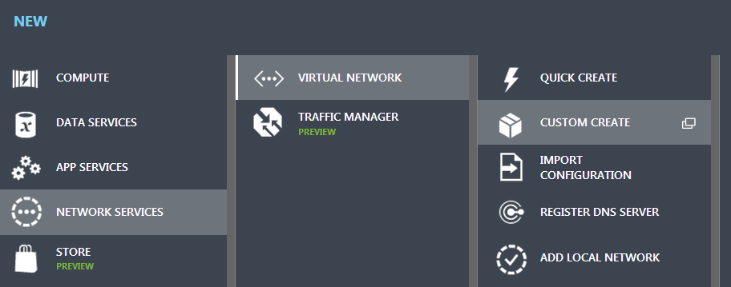
Input a name and create a new affinity group. For now we will just input values and discuss the details later:
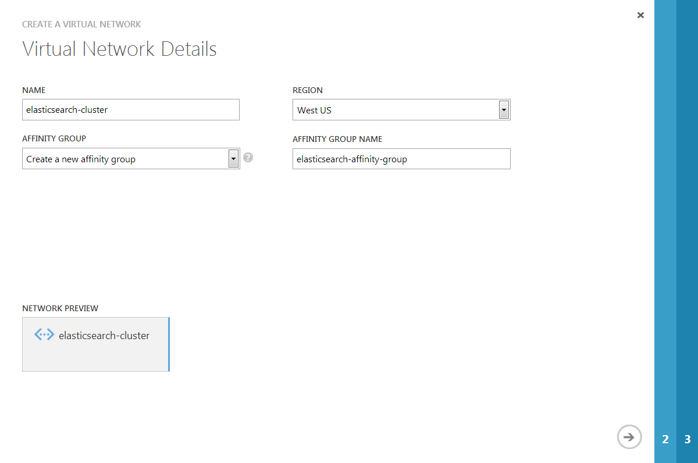
In the DNS Servers and VPN Connectivity step just click Next and Azure will control the DNS. The final step should look something like this:
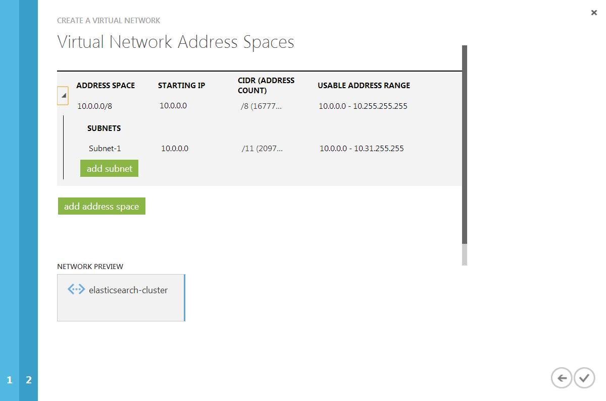
When finished click the Complete checkmark. So let’s rewind and talk about what we have done here. The virtual network is not necessary in order for ElasticSearch to work, but it makes it a hell of a lot easier, because all of the virtual machines on the same network will be able to communicate with each other, without you should worry about anything than allowing the connections through the firewall. More about that later.
I won’t go into details about the affinity group, but you can read a great introduction to affinity groups on Azure here: http://convective.wordpress.com/2012/06/10/affinity-groups-in-windows-azure/. Just think of the affinity group as a single container at Microsoft. Having all of your services in the same container, improves performance when communicating between different computers inside that container.
ElasticSearch requires some iron to execute. Let’s create a new virtual machine:
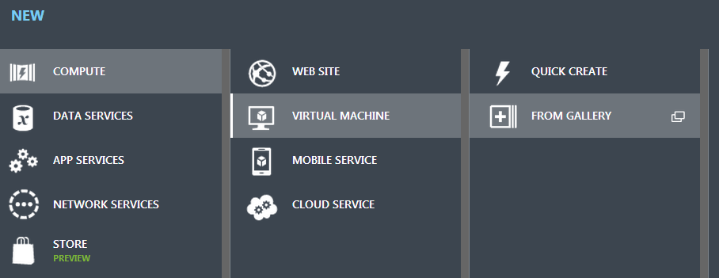
We want a data center edition of Windows to run our cluster:
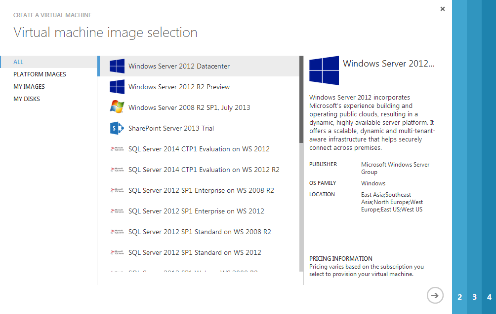
Give you VM a name and pick a size of your choice:
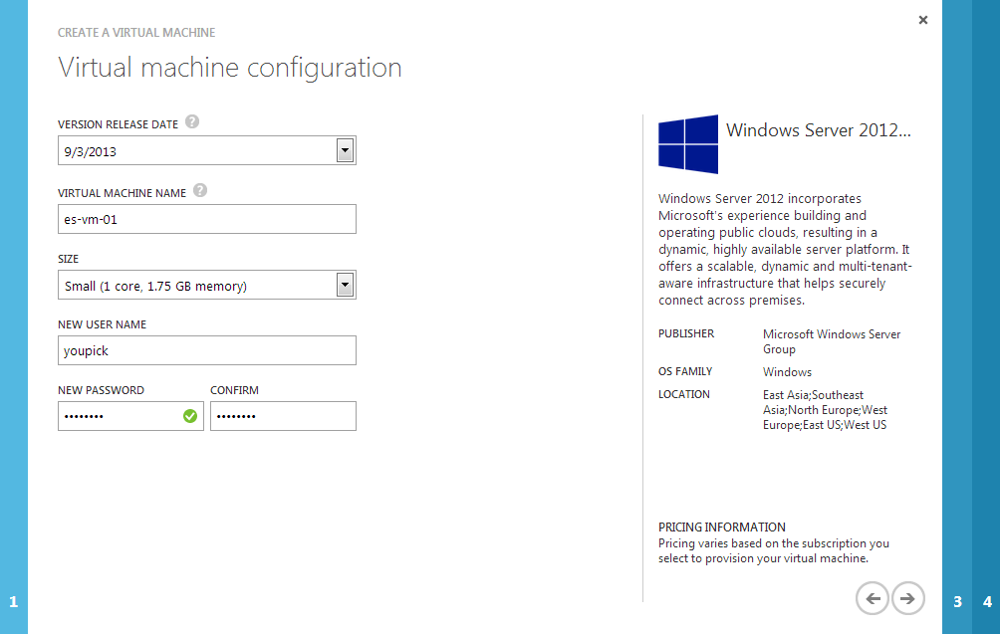
In the following step, we will use the new virtual network we just created. But before that, select the Create a new cloud service option from the Cloud Service select box. Cloud Services is a funny thing in Azure, because it maps to both a way of implementing web sites (web roles) and background jobs (worker roles) as well as to scale other services like virtual machines. In the Virtual Network select box, choose the elasticsearch-cluster network or whatever you decided to name it:
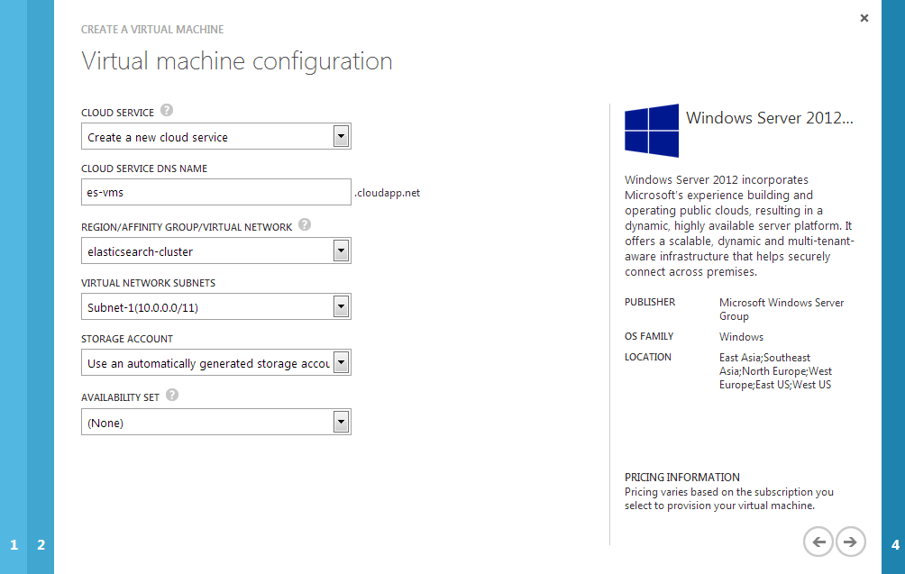
Leave the endpoints as is and click the Complete check mark:
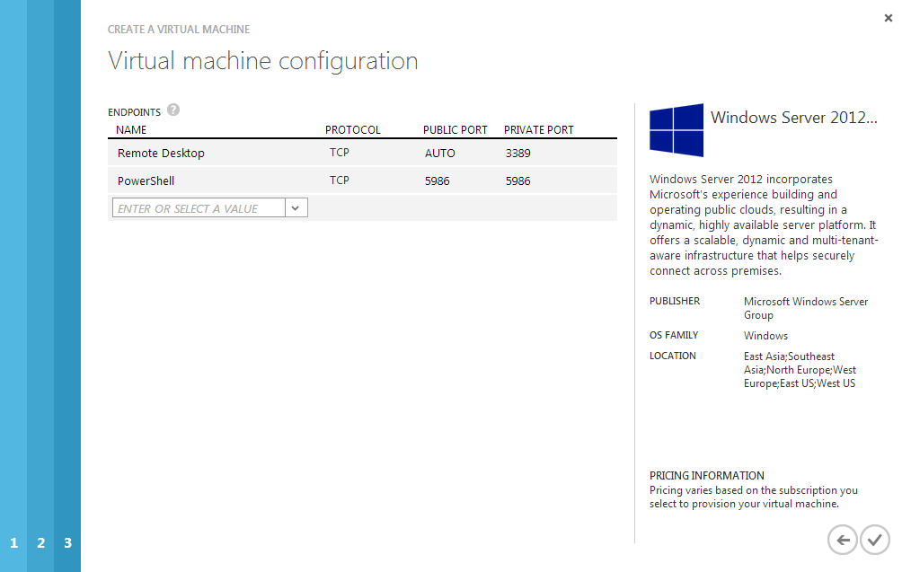
A few minutes later, your virtual machine will be up and running. We could go on and install ElasticSearch now, but one machine doesn’t smell like a cluster, right? You guessed what next: more VMs! I’ve always considered two nodes running a piece of software in a cluster as safe, but my time at eBay taught me, that you’d always want three nodes in a cluster. It’s probably up for debate, but having only two nodes doesn’t really make it a cluster every time you need to take one out for patching or similar. That’s why we create two additional VMs. The steps are exactly the same as above, except the Cloud Service select box where you should choose the es-vms cloud service you’ve already created.
I’m assuming that you have three VM’s up and running:
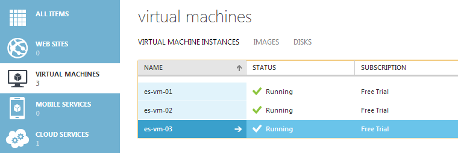
Now for the boring part: installing ElasticSearch. Actually it’s quite simple, but I wont go into detail on it, because it’s fairly well documented here in the Installation part. You might argue that we could do with installing ElasticSearch on a single VM and using that as a template for the other two VMs. You’re right! Azure supports creating new VMs from existing virtual discs, but I’ve never really tried, why I don’t want to write something rubbish. For now just install ElasticSearch on the three VMs.
Remember when I told the advantages about added all of the VMs to the same virtual network? Well now it’s time to collect. ElasticSearch supports different types of discovery, which in plain words makes multiple ElasticSearch instances talk to each other. The default type of discovery is multicast where you do not need to configure anything. Unfortunately multicast doesn’t seem to work on Azure (yet), why we need to configure this using unicast. On each VM, open the elasticsearch.yml located in the config directory of ElasticSearch and search for “# discovery.zen.ping.multicast.enabled: false”. In order for ElasticSearch to use unicast, uncomment this line. Also you need to setup the IPs of the other ElasticSearch instances in our virtual network. In my case, the following line does the trick:
discovery.zen.ping.unicast.hosts: [“10.0.0.4”, “10.0.0.5”, “10.0.0.6”]
The IP addresses visible from the dashboard of each VM. Make sure that you pick the internal IPs. Finally you need to specify the same cluster name for all instances using this line:
cluster.name: elasticsearch
ElasticSearch communicates between nodes on port 9300 and accepts connections from the outside on port 9200, why you need to allow inbound access on these ports in Windows Firewall. Copy the elasticsearch.yml around and start ElasticSearch on all the VMs. Congratulations! You now have your first ElasticSearch cluster up and running.
To communicate with your new cluster from a Azure website or something outside Microsofts datacenters, you need access to port port 9200 on all of the VMs. If you inspect the public IPs if all three VMs you will notice, that it’s the same. All three ElasticSearch instances will be able to handle requests on this IP, but in order to do so, you need to configure load balancing on Azure. Load balancing in azure is implemented in a real simple way through Endpoints. Navigate to the endpoints tab of one of your VMs and create a new endpoint:
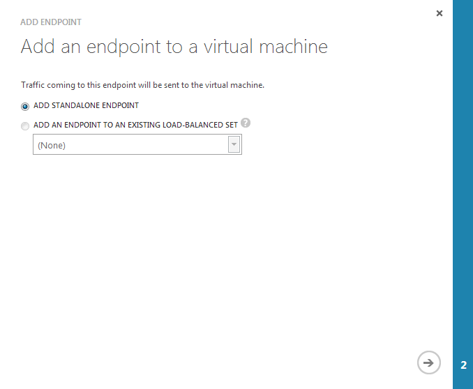
In the following step input a name and port 9200 in both Public and Private Port. Make sure to check the Create a load balanced set:
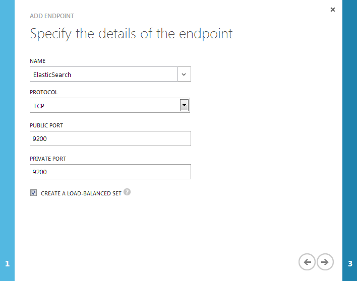
In the final step assign a name to the new load balanced endpoint and accept the default values in the rest of the fields:
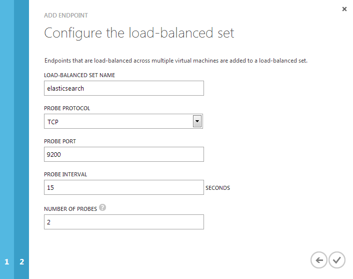
The only thing missing is creating the same endpoint on the remaining two virtual machines. Remember to select the existing load balanced set when creating the new endpoints. This makes Azure load balance incoming request to port 9200 on the IP of the VMs.
In my setup I’ve installed Head plugin for ElasticSearch, which makes it possible to visualize a new index on my cluster for you guys:
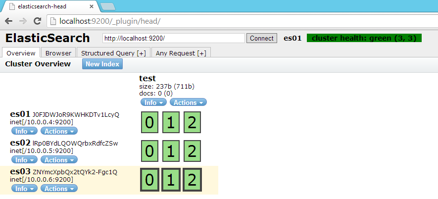